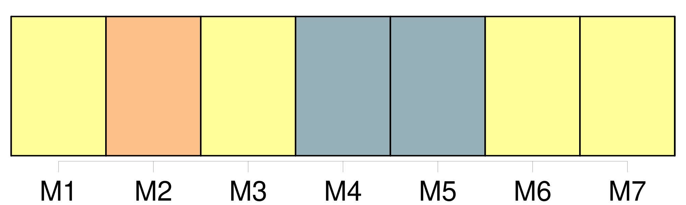

Longueur nb maillons : 22 mentions |
  |
Elle joue à courir dans [le verger] [qui] entoure la très vieille maison où, par un clair matin de mai, sa venue au monde apporta aux siens l'angoisse, le deuil et un désespoir sans limite. [1 phrases]
Et si la vieille maison reste grise et triste sous les rayons du frais soleil, [le verger] brille, [embaume] et [jette] au vent les mille et une fleurettes qui se séparent, comme à regret, des fruits naissants. [27 phrases] Elle était seule parce que son grand-père travaillait loin [du verger] [19 phrases] Dans [le verger] il n'était plus question de silence ni de rire muet. [9 phrases] Douce ne demandait pas mieux que de se baigner dans le ruisseau et que pêcher dans l'étang, mais pour cela il fallait sortir [du verger] , et son grand-père le lui défendait sévèrement, quoique la barrière fût fermée d'un solide cadenas dont il gardait la clé. [27 phrases]
Vers le milieu de septembre, ils durent cesser les jeux et les courses, le père Lumière restant à la maison pour la récolte de [son verger] et de son potager. [13 phrases] [Au verger] , tandis qu'il cherchait la meilleure place pour son échelle, elle étreignait l'arbre et se trouvait tout de suite dans les plus hautes branches, réclamant un panier qu'elle accrochait à sa portée et qu'elle emplissait rapidement. [6 phrases] Ce n'était pas chez mère Clarisse, qui vivait seule, et où il la conduisait le dimanche après la messe, ni ici [au verger] , [où] jamais ne venait personne. [165 phrases]
Et, tandis que le père range les lignes, Noël et Douce, courant et sautant, regagnent [le verger] [où] le chien les attend, dressé de toute sa hauteur contre la grille du potager. [1 phrases]
L'automne, avec ses brouillards et ses pluies, l'hiver, avec sa neige et ses gelées, séparèrent les deux enfants plus sûrement encore que la présence constante [au verger] du père Lumière. [15 phrases] Mais la ferme des Barray était peu éloignée du village, et Noël n'avait rien à faire sur la route qui conduisait [au Verger] , distant de plus d'un kilomètre. [69 phrases]
⁂ [62 phrases] Tout comme le père de Noël à Douce, le père Lumière faisait bonne figure à Noël lorsqu'il le rencontrait [au Verger] [64 phrases]
Tou, devenu vieux et patient, attend sa maîtresse à l'entrée [du Verger] et l'annonce par un aboiement qui ressemble à un rire. [12 phrases] Elle sait qu'il la prendra par la taille et la fera tourner en une danse folle, puis qu'il lui saisira solidement la main et la fera courir, jusqu' [au Verger] , ainsi qu'il l'a fait la seule fois de sa venue en vacances. [41 phrases] On ne parla que de Noël, ce soir -là, [au Verger] [9 phrases] Le lendemain même, vers le soir, elle le vit entrer [au Verger] |

|
La ressource peut être téléchargée sur la page Ortolang
Si vous avez des questions ou vous voyez des erreurs, merci d'envoyer un mail à silvia.federzoni89@gmail.com
Site développé par S. Federzoni (contact)